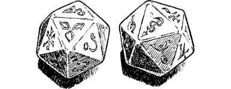

166
When the meal is over, Chan produces a pair of ornate ivory dice from the pocket of his tunic. ‘These are Xi-die,’ he says, and tosses them to you. They feel weighty and their intricate gold designs invite a closer inspection. When you return them to the Captain, he passes them over to one of his men who cups them in his hands and breathes on them. Then, with a quick flick of his wrist, he casts them onto the ground and Chan leans forward to study the result. Cheerfully he informs the man that his future is secure; he and his wife will be blessed with a son and they can look forward to a long and happy life together. You sense at once that Chan’s reading is false: he is simply using the Xi-die as a means of raising the man’s morale.
{kind=link}

Once all of Chan’s men have taken their turn to throw the dice and have each received a favourable reading, the captain offers them to you.
‘Would you like to discover what your future has in store, my lord?’ he asks. ‘All will be revealed with one throw of these dice.’
If you wish to cast the Xi-die, turn to 190.
If you choose to politely decline the captain’s offer, turn to 34.